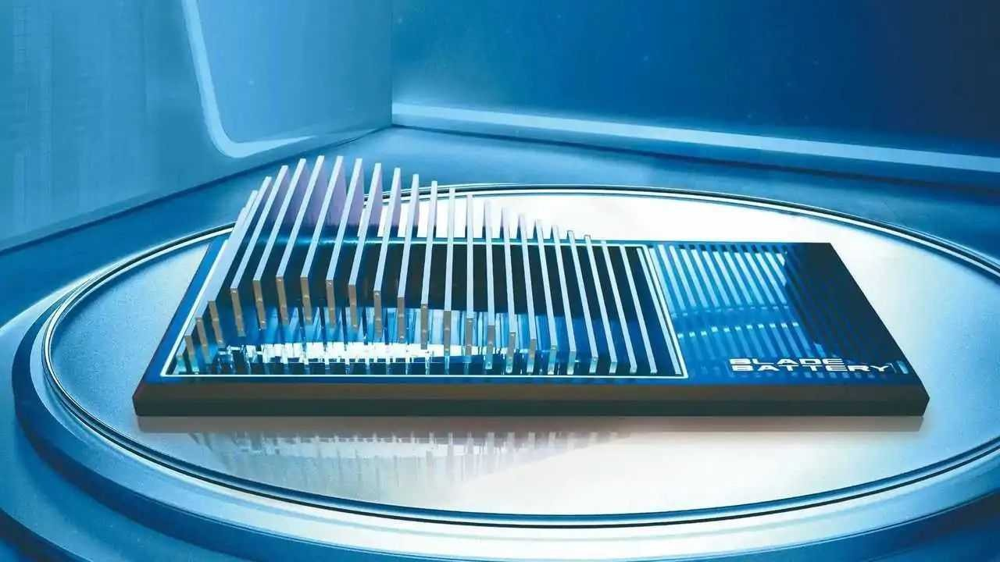
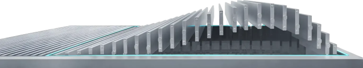
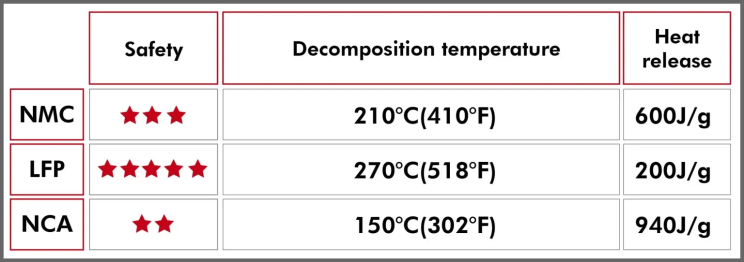
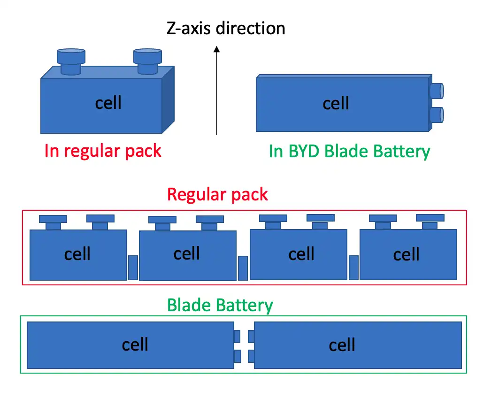

Introduction
When you think of electric vehicles, the first thing that probably pops into your mind is "battery life" or "range anxiety." But what if one innovation could shatter those worries? Enter BYD’s Blade Battery — a revolution in battery technology that’s catching the world’s attention.
It’s not just another battery; it’s a game changer. Whether you’re curious about EVs or you’re someone who’s already following every Tesla and BYD launch, this article will make you rethink what’s possible under the hood.
The Evolution of EV Batteries
Before diving into the brilliance of the Blade Battery, let’s rewind. Remember when early electric cars could barely go 100 miles on a charge? That was mainly because of primitive battery technologies like nickel-metal hydride and early lithium-ion solutions.
Traditional lithium-ion batteries came with their own baggage — overheating, risks of catching fire, shorter lifespan, and high costs. This sparked a global race to create something safer, longer-lasting, and more affordable.

What is the Blade Battery?
Developed by Chinese automaker BYD (Build Your Dreams), the Blade Battery is a lithium iron phosphate (LiFePO4) battery that stands out for its unique design and superior performance. Unlike traditional lithium-ion batteries, the Blade Battery features a long, thin cell structure that resembles a blade, hence its name. This design not only enhances the battery's energy density but also significantly improves its safety and thermal stability.

Key Advantages of the Blade Battery:
1. Lower production costs with lower heat generation but higher energy storage capacity.
The Blade Battery uses Lithium Iron Phosphate (LFP) which has undergone standard testing through the Nail penetration test method. In this test a nail is driven through the center of the battery cell until it penetrates to the other side causing a short circuit inside the battery cell.
Through this testing, BYD’s Blade Battery has demonstrated higher safety standards compared to Lithium Nickel Manganese Cobalt Oxide and Lithium Nickel Cobalt Aluminum Oxide batteries. Additionally, it also has lower production costs compared to NMC (Lithium Nickel Manganese Cobalt Oxide) battery production costs referenced to the price of nickel as the basis for NMC battery production costs.
2. Safety Superiority in Case of Accidents
According to safety standards the LFP (Lithium Iron Phosphate) battery type in BYD Blade Battery has higher safety standards than NMC and NCA due to its higher decomposition temperature (approximately 270 degrees Celsius), while other battery types are around 210 and 150 degrees Celsius respectively. Additionally, when damaged it releases less heat compared to other battery types.

With the proven quality of this Blade Battery innovation all issues are resolved, including cost, efficiency, and safety concerns. Therefore, its usage is increasingly popular with more charging stations being established especially in Thailand where there is growing awareness of EVs and a significant increase in charging stations.
Blade Battery vs Traditional Lithium-ion Batteries
- Unique Design for Higher Efficiency: Traditional LFP batteries are made of pouch or prismatic cells stacked in modules. BYD’s Blade Battery eliminates bulky modules and uses a flat, long blade-like structure. This allows more cells to be packed into the same space, increasing energy density without sacrificing safety.
- Unmatched Safety: While LFP chemistry is already safer than other lithium-ion types, the Blade Battery pushes this further. It has successfully passed the infamous nail penetration test with no fire or smoke — something most batteries can’t do.
- Longer Life and Thermal Stability: Blade Batteries last longer than conventional LFP packs — up to 3,000+ cycles — and maintain stability even at extremely high temperatures (up to 500°C).
- Better Space Utilization: The blade design allows the battery pack to use up to 50% less space compared to conventional LFP packs, freeing up more room in vehicles for design flexibility and potentially larger battery sizes.
- Consistent Performance: Blade Batteries show stable output over long-term use, making them ideal for both everyday cars and commercial vehicles.

Safety Tests and Real-World Proof
The nail penetration test is legendary. In this test, a metal nail is driven into the battery to simulate serious damage. Most batteries explode or catch fire. Blade Batteries? They don’t even smoke!
And it’s not just lab tests. In real-world accidents, EVs with Blade Batteries have shown remarkable safety records, providing peace of mind for drivers and passengers.
How Does the Blade Battery Improve Vehicle Range?
All that tight packing and energy density magic translates into tangible benefits. For instance, BYD’s Han EV, powered by the Blade Battery, boasts a range of over 600 km on a single charge! That’s more than enough for most daily commutes and even long road trips.
Charging Capabilities
Nobody likes waiting. The Blade Battery supports fast-charging, meaning you can go from 30% to 80% in just about 30 minutes. Quick pit stops just got a whole lot quicker.
Awards and Recognition
In 2024, BYD’s Blade Battery won Electrifying.com’s Innovation of the Year award for its contributions to safety, sustainability, and performance. The award highlights BYD’s leadership in advancing EV technology.
Conclusion
In a world racing toward electrification, BYD’s Blade Battery stands tall as a milestone innovation. It’s safer, longer-lasting, efficient, and environmentally friendly. It’s more than just a battery — it’s the backbone of the next-generation electric vehicle revolution. If you’re wondering what’s next for EVs, the answer might just be: Blade Battery-powered everything!